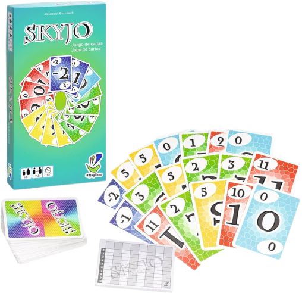
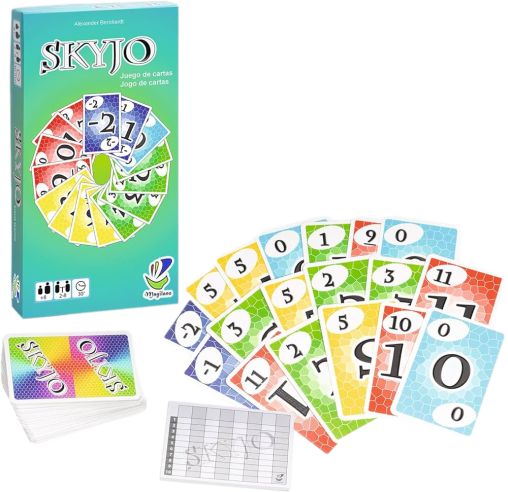

Etapes du projet
Le but du projet est donc de programmmer ce jeu en Python, en utilisant la bibliothèque Pygame.
La première étape est donc créer l'ensemble des 150 cartes.
Ensuite, il faut réussir à afficher ces cartes à l'écran (d'où la bibliothèque Pygame).
Après les avoir placés correctement à l'écran, et pouvoir cliquer sur celles-ci, les fondements du jeu sont finis.
Il faut maintenant coder les règles du jeu.
Une fois le jeu terminé, il peut être intéressant de jouer contre un ordinateur.
Celui-ci utilisera différentes stratégies pour gagner la partie.
Notamment, il peut choisir de prendre les cartes plus petites que celles de son jeu,
ou bien essayer de faire des colonnes, ou bien jouer complètement aléatoirement...